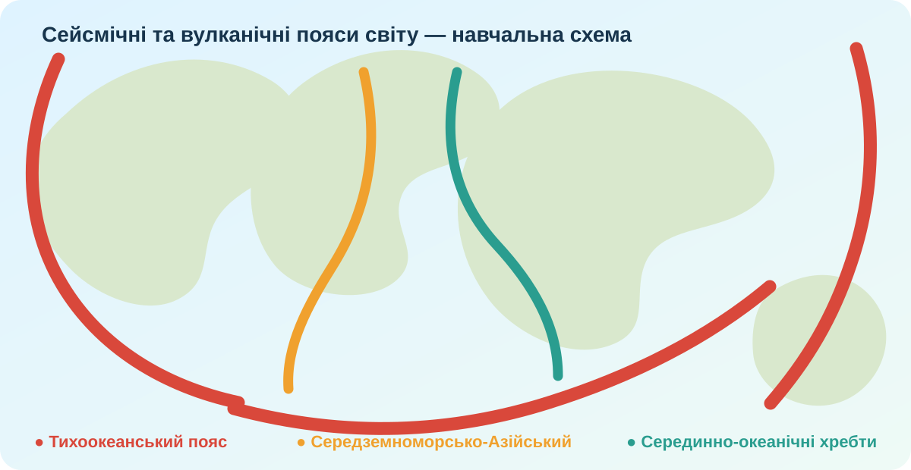
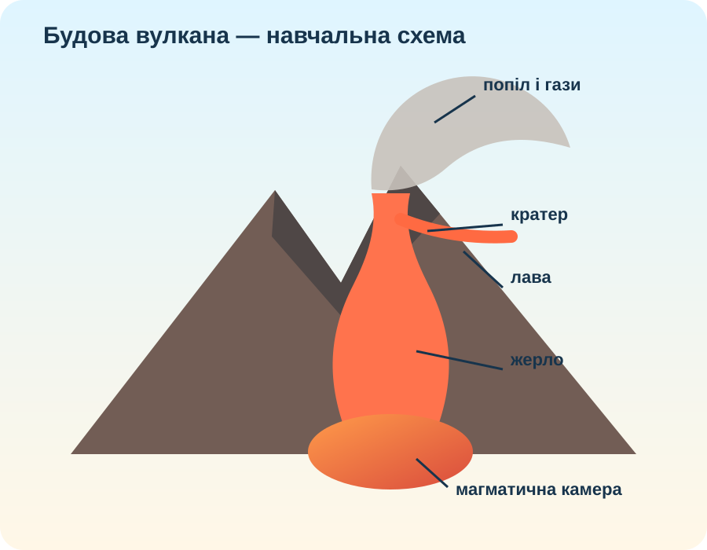

Вулканізм
Сукупність процесів переміщення магми й газів у земній корі та їх виходу на поверхню.
Чому вулкани утворюють пояси, а не розкидані по Землі випадково? Спершу знайдемо закономірність на картах і в реальних прикладах, а вже потім сформулюємо теорію.

Ви — команда вулканологів. Ваше завдання: пояснити зв’язок вулканізму з літосферними плитами, розрізнити типи небезпек і скласти науково коректну пам’ятку для туриста.
Порівняйте межі плит із зонами вулканізму. Натискайте пояси на локальній схемі.

Натискайте елементи схеми, а потім складіть причинний ланцюг.

Не всі виверження однакові. Порівняйте Кілауеа та Етну за реальними матеріалами.


Оберіть явище й спрогнозуйте просторову небезпеку.
КТП просить ознаки виверження. Вулканологи використовують не «прикмети», а комплекс моніторингу: сейсмічність, деформацію поверхні, гази, температуру та візуальні спостереження.
Заповніть поля.
Дивіться 0:00–3:30. Запишіть два докази, що тип виверження залежить від властивостей магми та газів.
Узагальнюємо те, що вже встановили з карт і прикладів.
Сукупність процесів переміщення магми й газів у земній корі та їх виходу на поверхню.
Геологічне утворення, через яке на поверхню надходять лава, уламковий матеріал і гази.
Великі зони підвищеної частоти землетрусів і вулканізму, переважно пов’язані з межами плит.
Циркумтихоокеанська зона, де Тихоокеанська плита взаємодіє з багатьма сусідніми плитами.
Теза → доказ → пояснення.
§17. Створіть мінібуклет «Один активний вулкан світу»: місце, тип межі плит або гаряча точка, 2–3 небезпеки, офіційне джерело моніторингу. Для повторення скористайтеся електронним підручником.
Електронний підручник / Всеукраїнська школа онлайн →Тест відкриється після введення даних учня.